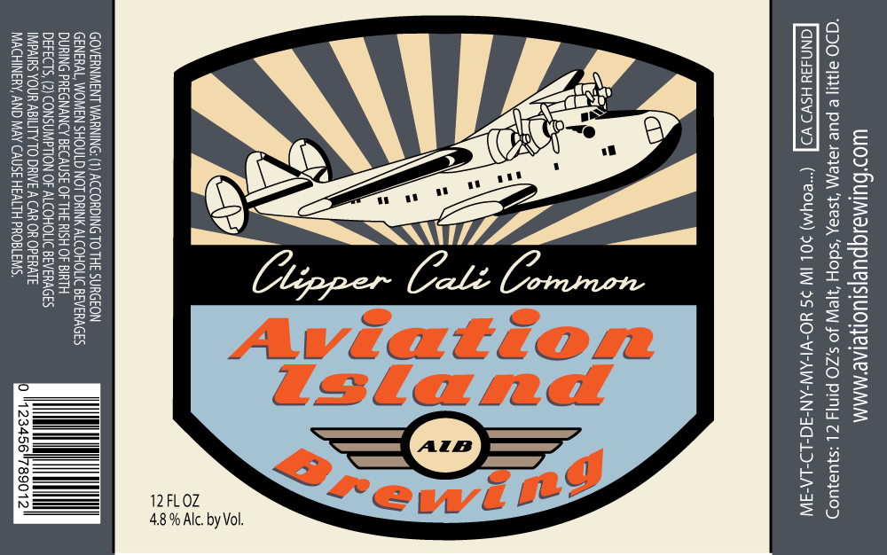
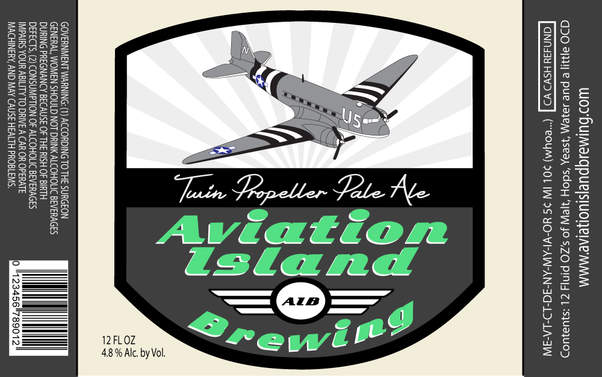
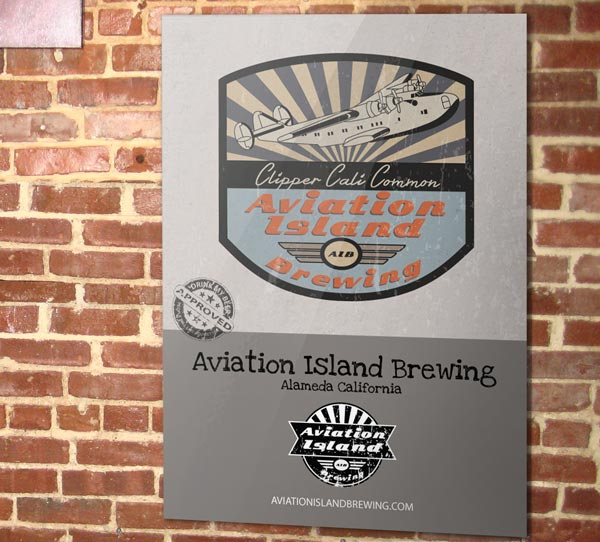
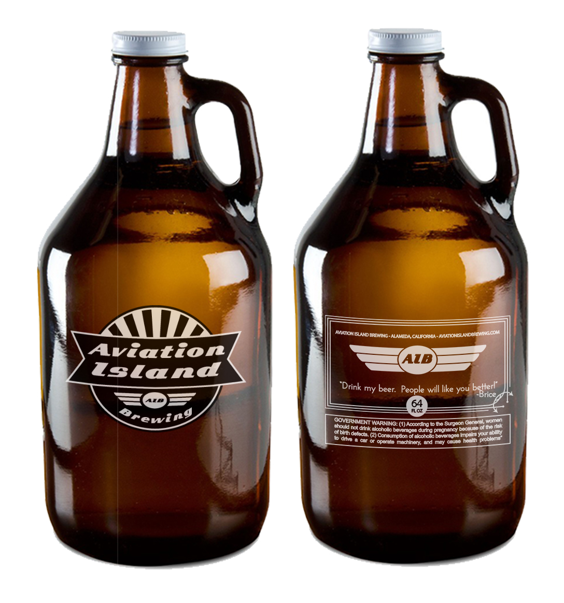
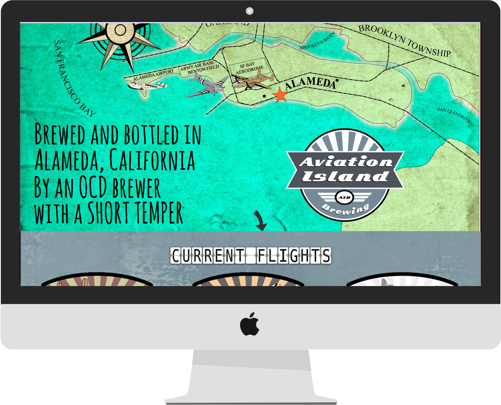
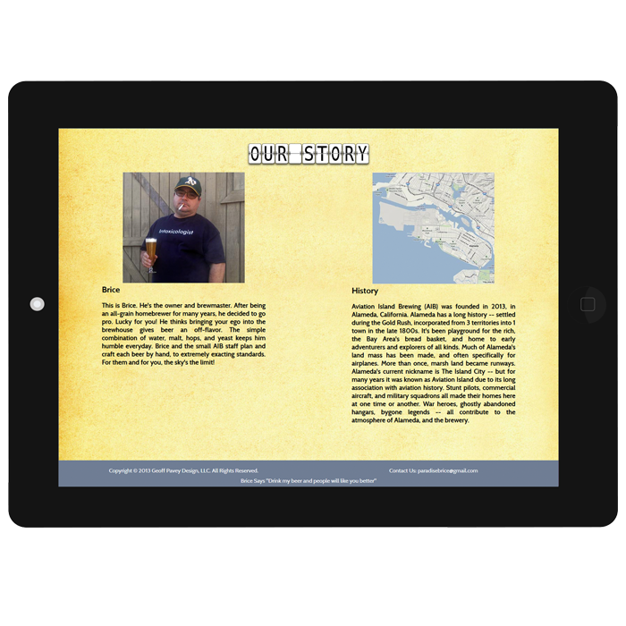

IDENTITY
BRANDING ELEMENTS
- 

- 

- 

GLASSWARE
- 

WEBSITE
- 

- 
Aviation Island Brewing is a private label owned and operated by brewmaster Brice Ginardi. It is located on the island of Alameda just east of San Francisco, California. After being an all-grain homebrewer for many years, he decided to go pro. Lucky for you! He thinks bringing your ego into the brewhouse gives beer an off-flavor. The simple combination of water, malt, hops, and yeast keeps him humble everyday. Brice and the small AIB staff plan and craft each beer by hand, to extremely exacting standards. For them and for you, the sky's the limit!

Brice wanted to create a brand that paid heritage to the long history of Alameda Island. Much of Alameda's land mass has been man made, and often specifically for airplanes. More than once, marsh land became runways. For many years it was known as Aviation Island due to its long association with aviation history.
I began by concepting his brand via the traditional medium of paper and pencil, moving into ink, then finally into a versatile final mark. I wanted all the elements to have a vintage look and feel. I created a map of the island as it was in the late 1930's. I chose a single page layout for the Aviation Island website, which turned out to be a perfect amount of space for all the necessary information.